فئة السيدان (Sedan Series)
ثلاث سيدانات بين الفخامة والكهرباء والأداء.
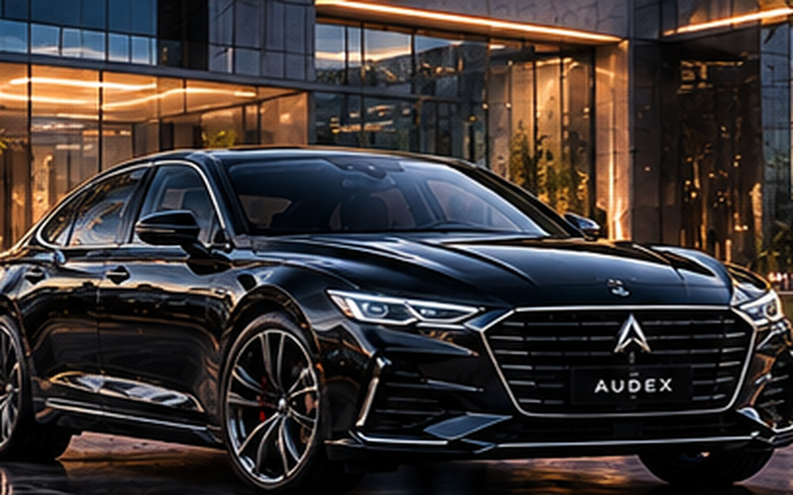
مكان الصورةبنزين / PetrolالتفاصيلAUDEX A4 Executive
252 HP

مكان الصورةبنزين / PetrolالتفاصيلAUDEX A4 Executive
252 HPسيدان مدمجة فاخرة مصممة لرجال الأعمال، تجمع بين الراحة المطلقة والتحكم الديناميكي على الطرقات السريعة.
- الفئة
- Sedan
- المحرك
- 2.0L Turbo 4-Cylinder (252 HP)
- التسارع (0-100)
- 5.8 ثوانٍ
- الضمان
- 7 سنوات / 200,000 كم
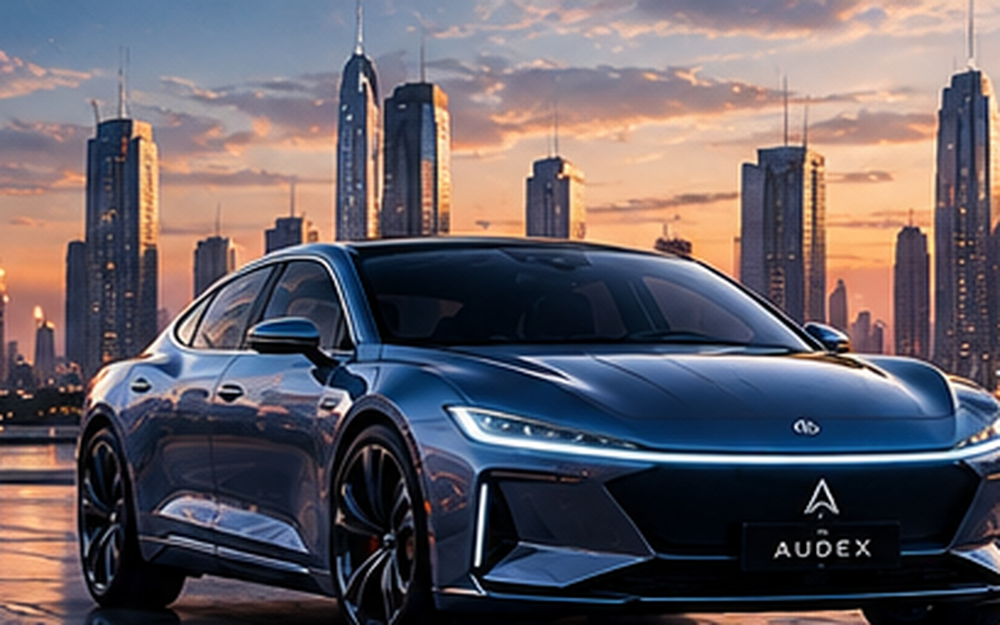
مكان الصورةكهرباء / EVالتفاصيلAUDEX E-Sedan Flow
580 km

مكان الصورةكهرباء / EVالتفاصيلAUDEX E-Sedan Flow
580 kmسيدان كهربائية بالكامل بتصميم انسيابي يقلل مقاومة الهواء، مزودة بنظام قيادة ذاتية وتقنيات ذكاء اصطناعي.
- الفئة
- Sedan
- البطارية
- 85 kWh
- المدى
- 580 كم
- القوة
- 380 حصان (دفع كلي)
- الضمان
- 7 سنوات / 200,000 كم
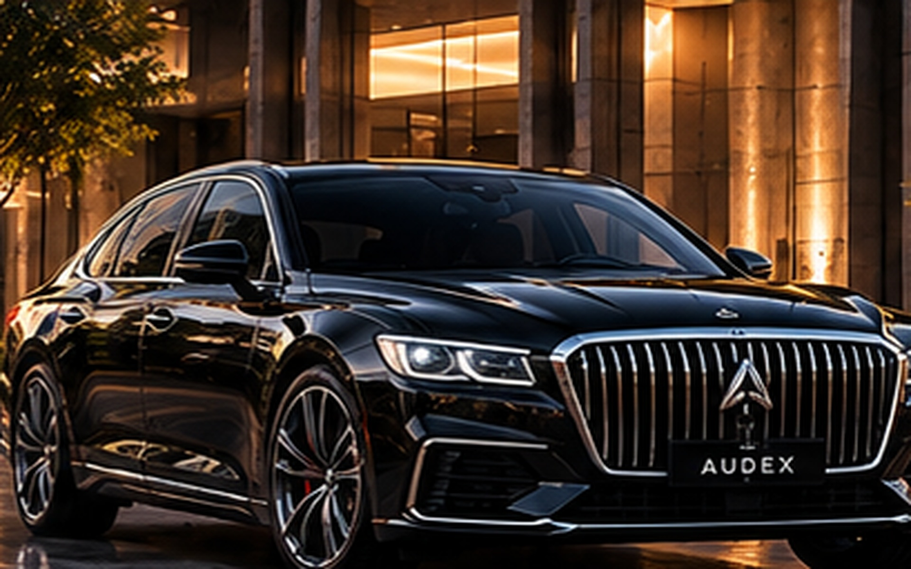
مكان الصورةبنزين - رياضي / V8التفاصيلAUDEX S8 Royale
560 HP

مكان الصورةبنزين - رياضي / V8التفاصيلAUDEX S8 Royale
560 HPالقمة في فئة السيدان الفاخرة ذات الحجم الكامل، مقصورة خشبية وجلدية مصنعة يدويًا مع محرك V8 مزمجر.
- الفئة
- Full-size Luxury Sedan
- المحرك
- 4.0L Twin-Turbo V8 (560 HP)
- التسارع (0-100)
- 3.7 ثوانٍ
- الضمان
- 7 سنوات / 200,000 كم
فئة السيارات الرياضية متعددة الاستخدامات (SUV Series)
للعائلات والمغامرات والطرق الوعرة.
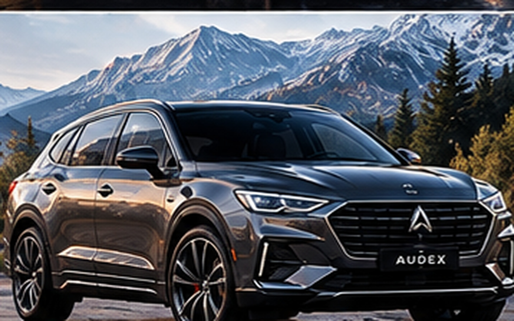
مكان الصورةبنزين / PetrolالتفاصيلAUDEX Terra Q5
300 HP

مكان الصورةبنزين / PetrolالتفاصيلAUDEX Terra Q5
300 HPسيارة SUV متوسطة الحجم للعائلات والمغامرات، تتميز بنظام تعليق متكيف للتعامل مع مختلف الطرقات.
- الفئة
- Mid-size SUV
- المحرك
- 2.5L Turbo (300 HP)
- نظام الدفع
- دفع رباعي مستمر (AWD)
- الضمان
- 7 سنوات / 200,000 كم
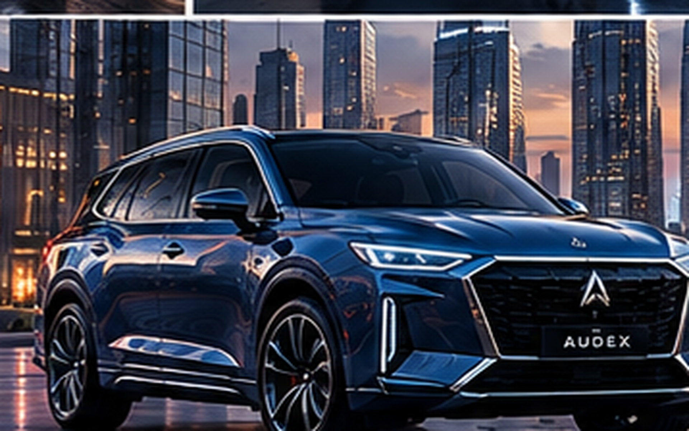
مكان الصورةكهرباء / EVالتفاصيلAUDEX E-Matrix SUV
620 km

مكان الصورةكهرباء / EVالتفاصيلAUDEX E-Matrix SUV
620 kmSUV كهربائية فاخرة بـ 7 مقاعد، تتميز بشحن فائق السرعة ومساحة داخلية واسعة متطورة.
- الفئة
- Luxury Electric SUV
- البطارية
- 100 kWh
- المدى
- 620 كم
- الشحن السريع
- 10% إلى 80% في 18 دقيقة
- الضمان
- 7 سنوات / 200,000 كم
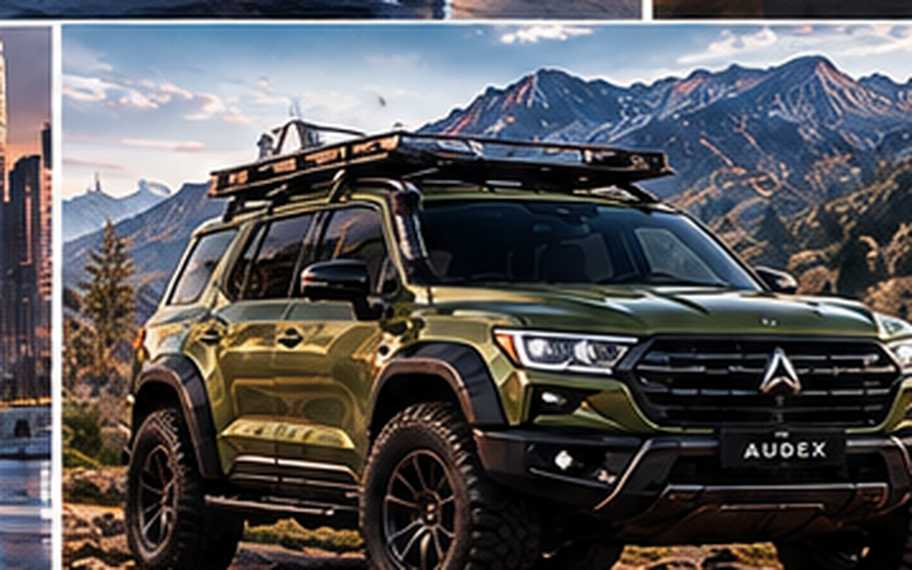
مكان الصورةبنزين / V6 HybridالتفاصيلAUDEX Titan Cross
430 HP

مكان الصورةبنزين / V6 HybridالتفاصيلAUDEX Titan Cross
430 HPسيارة SUV رياضية ضخمة هجينة مخصصة للطرق الوعرة الشديدة مع قدرات سحب وجر استثنائية.
- الفئة
- Large Hybrid SUV
- المحرك
- 3.5L V6 Hybrid (430 HP)
- وضعيات القيادة
- 7 وضعيات تضاريس مختلفة
- الضمان
- 7 سنوات / 200,000 كم
فئة السيارات الكهربائية المبتكرة (EV Pure Series)
كهرباء بالكامل بتقنيات ذكية.
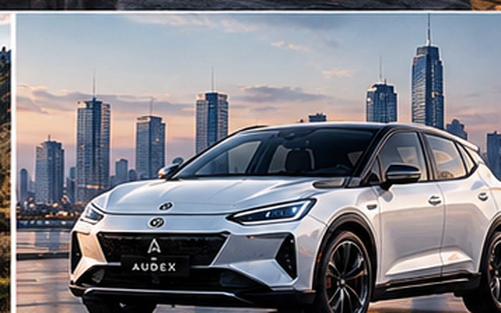
مكان الصورةكهرباء / EVالتفاصيلAUDEX Pulse Volt
420 km

مكان الصورةكهرباء / EVالتفاصيلAUDEX Pulse Volt
420 kmسيارة هتشباك مدمجة ذكية للمدن، توفر استهلاك طاقة مثالي وركن آلي بالكامل عبر الهاتف.
- الفئة
- Compact Hatchback
- البطارية
- 60 kWh
- المدى
- 420 كم
- الاستخدام
- مدني / ذكي بالكامل
- الضمان
- 7 سنوات / 200,000 كم
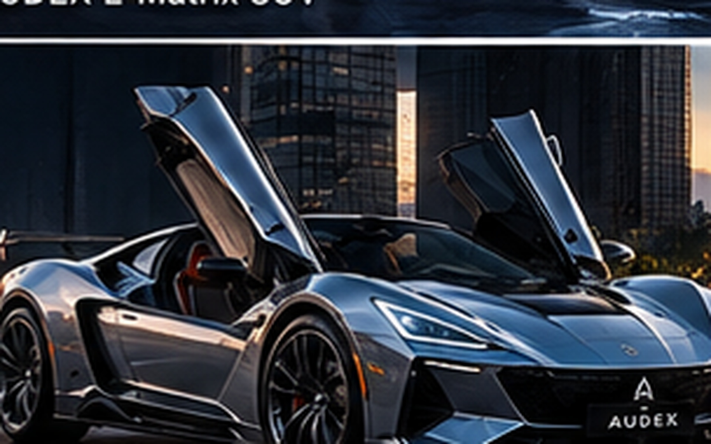
مكان الصورةEVالتفاصيلAUDEX CyberCoupe
510 km

مكان الصورةEVالتفاصيلAUDEX CyberCoupe
510 kmكوبيه كهربائية مستقبلية بأبواب مجنحة وهيكل من ألياف الكربون.
- الفئة
- Electric Coupe
- القوة
- 500 HP
- المدى
- 510 km
- الضمان
- 7 سنوات / 200,000 كم
الفئة الاقتصادية
كفاءة عالية في استهلاك الوقود.
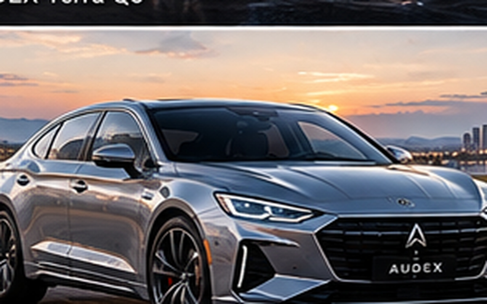
مكان الصورةPetrolالتفاصيلAUDEX Zenith ICE
180 HP

مكان الصورةPetrolالتفاصيلAUDEX Zenith ICE
180 HPسيدان اقتصادية بنزين بمحرك 1.6 Turbo اقتصادي وعالي الكفاءة.
- الفئة
- Economy Sedan
- المحرك
- 1.6 Turbo
- القوة
- 180 HP
- الاستهلاك
- 6.2 L/100km
- الضمان
- 7 سنوات / 200,000 كم
الفئة الرياضية الفائقة (Sports & Performance)
أرقام قياسية وأداء بلا حدود.
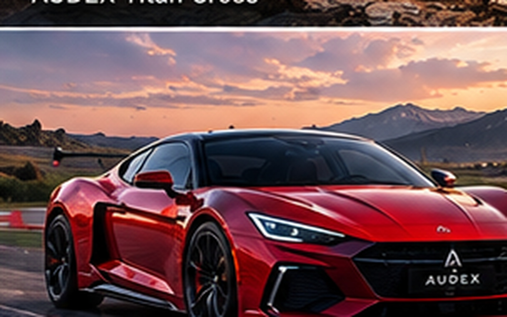
مكان الصورةبنزين / V8 SuperchargedالتفاصيلAUDEX GT-R Apex
720 HP

مكان الصورةبنزين / V8 SuperchargedالتفاصيلAUDEX GT-R Apex
720 HPسيارة سباقات مرخصة للطرقات، مصممة لتحطيم الأرقام القياسية على حلبات السباق.
- الفئة
- Track-bred GT
- المحرك
- 5.2L V8 Supercharged (720 HP)
- السرعة القصوى
- 340 كم/ساعة
- الضمان
- 7 سنوات / 200,000 كم
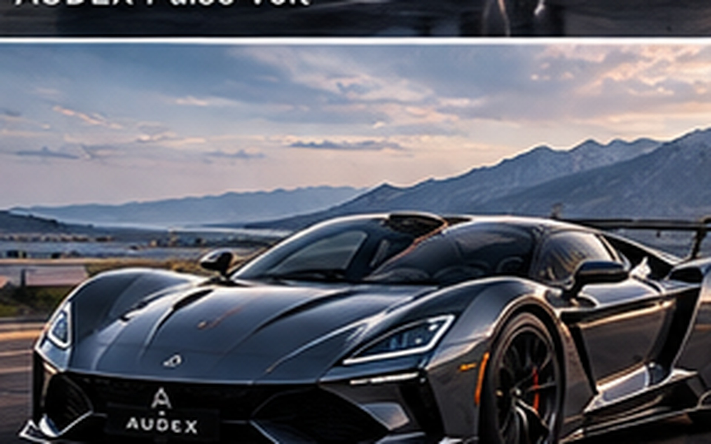
مكان الصورةكهرباء / HypercarالتفاصيلAUDEX E-Hyperion
1,400 HP

مكان الصورةكهرباء / HypercarالتفاصيلAUDEX E-Hyperion
1,400 HPسيارة خافقة للأنفاس بـ 4 محركات كهربائية مستقلة لكل عجلة، تقدم تسارعًا مذهلاً لكسر حدود الفيزياء.
- الفئة
- Electric Hypercar
- القوة الإجمالية
- 1,400 حصان (Quad-Motor)
- التسارع (0-100)
- 1.9 ثانية فقط
- الضمان
- 7 سنوات / 200,000 كم
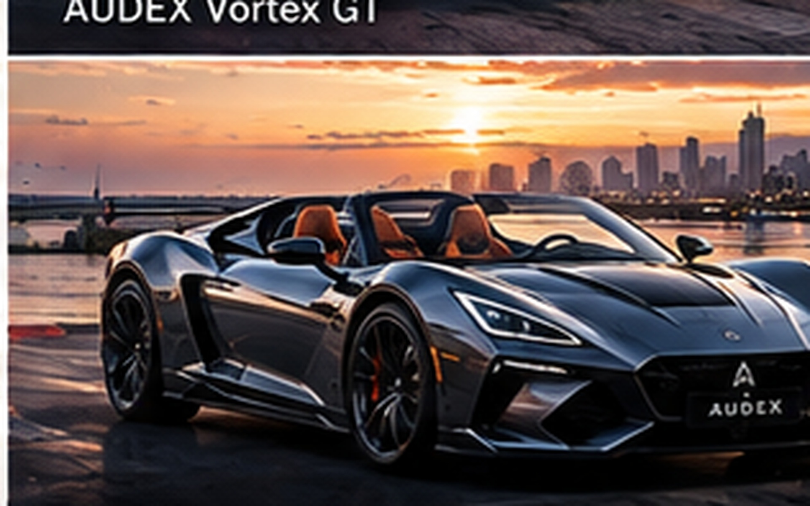
مكان الصورةبنزين / ConvertibleالتفاصيلAUDEX Roadster V6
450 HP

مكان الصورةبنزين / ConvertibleالتفاصيلAUDEX Roadster V6
450 HPسيارة رياضية مكشوفة بسقف متحرر توفر متعة قيادة كلاسيكية مع صوت محرك رياضي طروب.
- الفئة
- Convertible Roadster
- المحرك
- 3.0L Twin-Turbo V6 (450 HP)
- التسارع (0-100)
- 4.1 ثوانٍ
- الضمان
- 7 سنوات / 200,000 كم
الضمان والخدمة
ضمان 7 سنوات أو 200,000 كم على جميع الموديلات.
تقنيات AUDEX
شاشات OLED تفاعلية وأنظمة قيادة ذاتية Level 3.
الاستدامة
تصنيع محايد للكربون بنسبة 100% بحلول عام 2028.